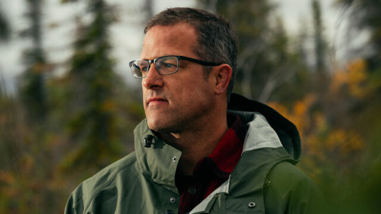
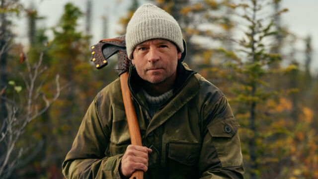
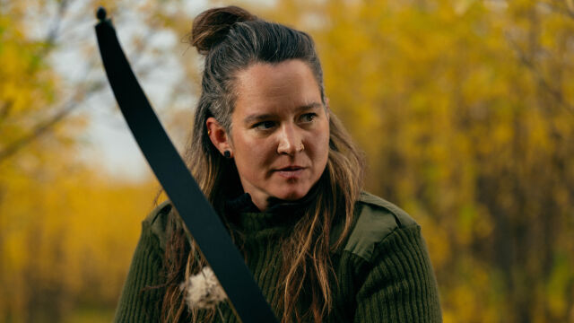
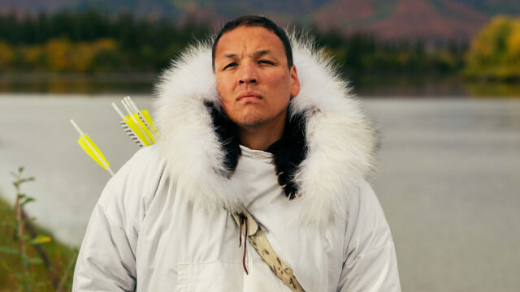
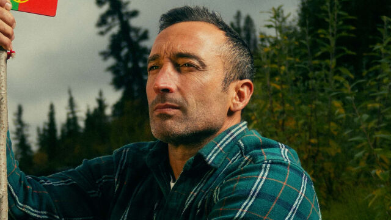
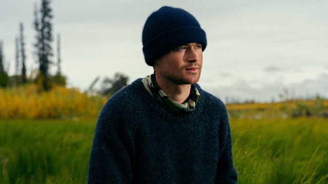
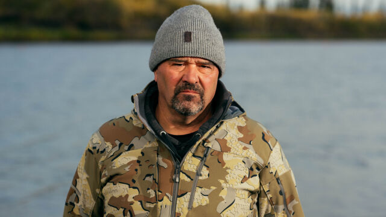
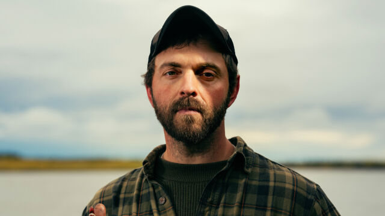

1stWinner
1stWinnerZiga Ogorelec
Biologist
- Lasted
- 90 days
- Age
- 35
- From
- Kocevje, Slovenia
Loadout
- Sleeping Bag
- Saw
- Bow and Arrows
- Paracord
- Snare Wire
- Cook pot
- Fishing line and Hooks
- Gillnet
- Shovel
- Knife
Alone
World Championship · Beaufort Delta, Northwest Territories, Canada · Dropped off 16 Sep 2025 · Premiered 17 Jun 2026
Days each survivalist lasted, in finishing order, and why they tapped out. Every season page uses the same 0–100 day scale so seasons can be compared at a glance.









Who they are, where they're from and the ten items they carried in.
1stWinnerBiologist
Loadout
Tradesman
Loadout
3rdplaceOutdoor Advocate And Educator
Loadout
Wilderness Skills Educator
Loadout
Wilderness Skills Educator
Loadout
Stay-At-Home Dad
Loadout
Army Sergeant
Loadout
Whitewater Kayaking Instructor
Loadout
Retired School Principal
Loadout
Project Manager
Loadout
How many survivalists chose each item (items grouped into simplified categories).
Air dates, survivalists remaining at the start of each episode, viewers and IMDb rating.
| Ep | Title & opening quote | Aired | Remaining | Viewers (M) | IMDb |
|---|---|---|---|---|---|
| 1 | Worlds Collide Part 1“Bravado may stir the crowd, but courage needs no audience.” — TF Hodge | 17 Jun 2026 | 10 | 0.39 | |
| 2 | Worlds Collide Part 2“Notice how the stiffest tree is most easily cracked, while the bamboo or willow survives by bending with the wind.” — Bruce Lee | 24 Jun 2026 | 9 | 0.41 | |
| 3 | Building Momentum“I find that opportunities actually present themselves in unexpected ways, and this is what I want to be open to.” — PJ Hirabayashi | 1 Jul 2026 | 8 | 0.42 | |
| 4 | Cold Omen“He who rejects change is the architect of decay.” — Harold Wilson | 8 Jul 2026 | 8 | — | |
| 5 | Thin Margins“I am life that wants to live, in the midst of life that wants to live.” — Albert Schweitzer | 15 Jul 2026 | 7 | — | |
| 6 | Balancing Act“Start where you are. Use what you have. Do what you can.” — Arthur Ashe | 22 Jul 2026 | 7 | — | |
| 7 | Natural Order“The tree which moves some to tears of joy is in the eyes of others only a green thing that stands in the way.” — William Blake | 29 Jul 2026 | 6 | — | |
| 8 | Tides of Fortune“Change your leaves, keep intact your roots.” — Victor Hugo | 5 Aug 2026 | 5 | — | |
| 9 | Icebound“When you realize there is nothing lacking, the whole world belongs to you.” — Lao Tzu | 12 Aug 2026 | 5 | — | |
| 10 | No Safe Haven“We must learn to suffer what we cannot evade.” — Michel de Montaigne | 19 Aug 2026 | 5 | — | |
| 11 | Fire and Famine“No man ever steps in the same river twice, for it's not the same river and he's not the same man.” — Heraclitus | — | 4 | — | |
| 12 | Subzero“Truth is confirmed by inspection and delay; falsehood by haste and uncertainty.” — Tacitus | — | 3 | — | |
| 13 | Worlds Apart“What is to give light must endure burning.” — Viktor Frankl | — | 3 | — |